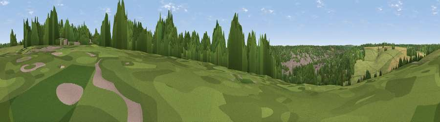

Viewpoint near Berkhamsted
#44142 in England · top 83% of its area beats it · near BerkhamstedThe view, rendered

A 360° render of this exact spot computed from the terrain model, tree cover and land cover — summer colours, afternoon light, calibrated against photographs of famous viewpoints. Real trees, hedges and buildings will differ in detail.
The panorama
Grey silhouette: terrain skyline in each direction (720 bearings, Earth curvature and refraction included). Dashed green: skyline with trees (+15 m) and buildings (+8 m) as obstacles. Blue strip: how far the ground is visible on each bearing.
Where the view opens
Wedge length = distance to the farthest visible ground on that bearing (vegetation-aware). Rings at 10, 25 and 50 km.
What fills the view
36% woodland · 29% grassland · 24% built-up · 11% cropland
Angular shares of the visible panorama (visual magnitude), not map area. Landscape diversity 0.57 (0–1 Shannon).
Key numbers
More beautiful places nearby
The staircase of upgrades: each row has a higher view potential than everything closer. Driving times are estimates from straight-line distance, calibrated against real road routing — check an actual route before setting out.
| Place | Direction | Drive | Score |
|---|---|---|---|
| Berkhamsted Hill | NNE · 0 km | ~1 min | 26.9 |
| Viewpoint near Felden | SE · 5 km | ~11 min | 27.3 |
| Viewpoint near Tring Station | NW · 7 km | ~14 min | 46.9 |
| Viewpoint near Aldbury | NNW · 7 km | ~15 min | 56.5 |
| Viewpoint near Tring Station | NW · 8 km | ~16 min | 68.5 |
| Beacon Hill | NNW · 9 km | ~18 min | 74.1 |
| Viewpoint near Halton | W · 11 km | ~22 min | 74.3 |
| Coombe Hill Monument | W · 15 km | ~27 min | 75.5 |
51.76468, -0.55198 · source: screening · position refined by local search. Computed location — check access rights before visiting.